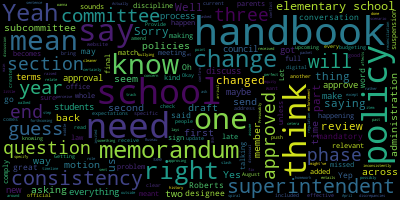
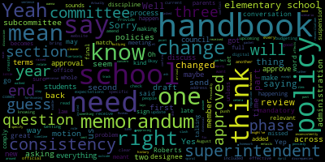

total time: 3.12 minutes
total words: 576

total time: 44.86 minutes
total words: 6713

total time: 12.96 minutes
total words: 1813

[Intoppa]: Yes, yep, I will. OK, we are live on YouTube, and let me record it locally. Record to the cloud. And make host. All right, have a great meeting. Thank you. Thank you.
[Ruseau]: Hello, everybody. This is the ad hoc subcommittee handbook evaluation. for May 8th, 2024 at three o'clock. And we will be having this meeting through Zoom. The meeting can be viewed live on the Medford Public Schools YouTube channel, as well as through Medford Community Media on your local cable channel nine. 8, 22, or Verizon 43, 45, and 47, the meeting will be recorded. Since the meeting will be held remotely, participants can log or call in using the following information. Interestingly, it says Zoom link, I don't have the actual URL. Let me see if I can.
[Intoppa]: I can read it out for you if you'd like.
[Ruseau]: Yeah, why don't you, if you could read that out for me, since I don't have it.
[Intoppa]: Sure, so the meeting ID is 91810757989, with the Zoom meeting link being mps02155-org.zoom.us, forward slash J, forward slash 918177, 757, sorry, 989.
[Ruseau]: Thank you. Any questions or comments can be submitted to me, pruseau, P-R-U-S-E-A-U, at medford.k12.ma.us. And of course, if you have any questions, you can raise your hand, it's presently just us. So to submit any questions, you will need your first and last name, your Medford Street address, or if you're an employee, please indicate that, and your question or comment. The agenda for today is as approved by the committee on February 4th, 2024, item number 2024-8, Be it resolved that the Medford School Committee will establish an ad hoc subcommittee to establish a process and norms around annual handbook review for the resolution passed unanimously on 11-20-22. 2024, which was item 2023-26. And if anybody hasn't lost yet, I'm impressed. That one said, be it resolved that the subcommittee will establish at the February 5th school committee meeting, we're a little late, and we'll work to complete the process as close to the original deadline of April 1st, 2024 as reasonably possible. So I'm going to take the role. Member Intoppa? Present. Member Reinfeld? Russo present three present we have a quorum so um you know um our charge is to draft well a document in other words a policy about how we would like to proceed with our handbook reviews each year and um I did search other school systems and not surprisingly slash not surprisingly, actually, I couldn't find anything. It's very interesting. So the law does require us to approve them each year. And my guess is some years we do it in Medford, some years we don't. I'm betting that a lot of school systems are in the same boat, but hopefully we can lay that down and that. So I have a draft. that I have been writing today that I will share.
[Reinfeld]: Member Ruseau, is there any history that we need to know about about how this has been done in the past other than inconsistently or in terms of timeline where the administration this year we got a packet full of policies slash draft policies with the final draft forthcoming?
[Ruseau]: Sure. So I do that's thank you because while there's nobody watching right this moment, there might be somebody in YouTube and certainly people might watch this later. So the way the intent is that school councils will draft a recommended update to the handbook and then those will come to the school committee for approval, presumably in the spring for the following school year. I think that historically in Medford there, I remember one time approving handbooks or maybe two times in my seven years. And it was sort of like, here are the handbooks, you have to approve them. Okay. And they were at that time, they were all very different handbooks. And obviously middle schools and high schools and elementary schools have different handbooks, but for all four elementary schools to have different handbooks was kind of, It wasn't just that they were formatted differently with different fonts and colors. There were actually some policy and content differences that could not be correct. The School Committee has a policy, and in some of the books, it was the policy. In others, it was something drafted long ago or by a principal or a superintendent. So the need to clean that up has been an ongoing process. Now, I will say that we are in much better place now than then. The elementary school handbooks, for the most part, are the same. Content-wise, I believe they're pretty much the same. I think one of them is still formatted very differently, but honestly, that is not a hill to die on. um i have a guess as to which one that is but we don't need to talk about that but i have it in front of me as well um but you know again i i do honestly feel like format and you know like some schools have they're named after a person others are named after a river you know like to have your handbooks look different i i could get behind that um but the content needs to comply with policy, law, regulations, et cetera. And that's sort of the point of this meeting is to get a process in place. So when we review things, first of all, we know that all of the handbooks we've approved are, in fact, complying with that stuff. You know, there's always more interesting things like, you know, how does each school handle a drop off in the morning and pick up and, you know, every school's got a different physical structure. So those would be different, but it's sort of the baseline stuff that we need to make sure we have and that we are doing the approval that we're supposed to do. That's the number one most important thing is that we are supposed to by law put our signature on these things. And so we're gonna lay that out tonight, how we get there. So can you see this okay?
[Reinfeld]: Yes.
[Ruseau]: So I am drafting a different policy which we're not here to discuss tonight and it just happened to have it was a schedule timeline kind of a policy which I'm not going to tell you about because of open meeting law, but I realized that it was sort of useful here. And so there's. three phases in my mind. Obviously, this is a dialogue between us. There's the initiation of the update process. These are dates that I just walked back in my mind when I thought would make sense. I do expect the administration to have opinions on this, and we can change the dates, obviously, during the regular meeting. So in my mind, sometime time between August 1 and September 30. The process will begin, and this is to begin the handbook update for the following school year, so I have that the superintendent will create a digital versions of each hand school handbook. I know using the word digital here is kind of annoying, but I just wanna make sure we are clear. We are not talking about printing huge binders of paper that we're expecting to get anywhere. And so this is just a copy of the current, this is the current handbook that will be in use this particular school year that this is happening. So I'm going to use dates. I'm just gonna say during school year, 2024, which began in 2023, this would be the current handbook we're using right now. So then the superintendent's office, and this is one thing where I'm not clear if maybe it's somebody else in her office or whatever, but that these copies, which I'm calling drafts, will be updated. Somebody in the office will go through them, looking at school committee policy that has changed within the last year, any district policy and for the uninitiated. So school committees have a lot of authority over policy. The way the law is written is that if we do not actually say what our policy is, then the superintendent is the policymaker. Just anything the superintendent says, goes as policy, I mean, obviously within the law. So that's why I've separated them out here because there are plenty of things for which we may have a policy on, or we may make a statement about what we expect and want, but then there's lots of things we don't. Now, whether we should or not is unrelated to this conversation. So then district policy is, I didn't want to put superintendent because sometimes it actually ends up being the principal, or it could be at a departmental level of like a science policy. I mean, so I just put district. I do think the word district, it might be a better word, but I don't know what it is. But anyways, any of the changes that have to happen because of changing policies, laws, regulations, legal rulings, those need to just be put into the drafts by the central office. We don't want seven or eight schools running around trying to find out what legal rulings there were this year, what school committee policies changed. I mean, that's just silly. And that would be school councils doing that. Those are just volunteers from the school. I don't think that's the right way to go. I mean, there's teachers too. So a draft, that incorporates all of that stuff will be created by the central office, a memorandum detailing each of those changes. Now, I do not mean, I don't think anybody here expects to include in the memorandum corrections to spelling and punctuation, but each substantive change, there should be an explanation for what it is. And then a copy of the handbooks originally, which are the current operating handbooks, the draft one, the memorandum explaining the changes, and a copy of this policy. will be sent to each school principal. So the Roberts will get their version of their handbook with the required things and each of the schools will too. You know, each of the handbooks do not necessarily contain, you know, the high school handbook may contain things that the elementary one does not and vice versa. So this is the initiation of the process. I suspect administration will have some tweaks to this and you know, The point is it starts within some reasonable timeframe. And the most important things in my personal opinion are this memorandum of changes so that we are not being asked at the end of this to read a whole manual from a school and just guess what changed from the previous year. It's an impossible task. So next, those things go over to the principal. The school councils and I'm not outlining how school councils get created and all that other business that's all the schools have them already. They're expected to draft what I'm calling the recommended. Handbook, so they'll go through it. They'll have the document that includes all of the changes that had to happen. And these are not changes that the school council is expected to. I mean, they'll have opinions on I mean, everybody has opinions, but these are not changes. They're going to if the superintendent makes an update because school committee changed the policy. The school council doesn't undo it. It's, this is just, they can make all of the other changes that they want. And there are many changes school councils recommend. So they will go through the handbook. They will not be confused about why this language suddenly changed because it will be in the memorandum explaining it. And they will generate what's called, John, go ahead.
[Intoppa]: Yeah, so quick question. So I guess it's more of like a point of clarification. I'm assuming this is sort of the point the school council's made up of like students, staff, faculty, is this the point for them to kind of give their feedback on like, we're finding that this isn't working or this like we've noticed this uptake in this and we need to do something about it like is this the community's chance to sort of
[Ruseau]: Well, not feedback, the school council is responsible for providing it. I mean, they may provide us, there's also this school council changes memorandum. So if they make a change, You know, a substantive change. I'm really struggling with examples. Make a substantive change. Not again, not regarding the laws and policies and regulation stuff. They make a change to the handbook and.
[Reinfeld]: Let's say it's about arrival and dismissal.
[Ruseau]: Sure. Thank you. And if it's not controversial, they're just gonna say, we've changed this and the principal and everybody thinks this is gonna work better. And that's one sentence and everybody's happy. If there's anything more challenging, then I can certainly see dialogue going on there. But the goal here is also that the school councils don't have to come and stand before us as a school committee for hours on one night. That's not expected of them. It's also not reasonable.
[Reinfeld]: So... Because if they have a concern about a school committee policy, that would be raised outside of this process.
[Ruseau]: Correct. I mean, they can have a concern, but the policy change isn't going to happen in time for this.
[Intoppa]: Okay. Yeah, because I guess I'm more thinking about when the users of the handbook can give feedback on what they're seeing made, like when that period would be essential. And I wasn't sure if that was the time for it or not.
[Ruseau]: Yeah, I mean, the school councils, I think, are constantly in that mode all year long. And so I've not been on a school council, but I imagine that things are piling up. And then when it's time to start this work, they've got their pile of things that they need to work through. And it's between them and, well, the principal is part of the school council, I believe. The listing is in the law, but I forgot it. Yeah, but so this is, you know, this is in every way divorced from school committee so far. So they'll create a memorandum as well that just explains their changes, not the required changes. And then they will send that recommended handbook and the memorandum to the superintendent for review and submission to us. I didn't put it in here that the superintendent may have opinions on it, but my thoughts on that are this. The superintendent and central administration staff are not 16, 25, 40 people. If a school council and a principal have all approved this, I can't foresee the central administration sitting down to review and decide whether they agree on everything. It's a universe of endless availability of time and resources that doesn't exist in most places, I'm sure. So anyway, so I just want it to be like, superintendent gets it. The review is if the superintendent really even wants to review it, and getting it to us. Next up is our review. So I put a pretty big timeframe here, but I did wanna make sure it happens before we're in May. So for school committee members and you both are, this is your first term, but May has many names in school committee council, school committee circles, because that is when we get 750 invitations to every performance at every grade, at every school, and every art show and every presentation from the social studies and the humanities and every single award ceremony. And May is both joyful and absolutely impossible for school committee members. So in my mind, thinking about all the other responsibilities we have, I want this thing to be out of the way before May hits because May, I like May, if we're able to just focus on the students and the successes of that school year. If we also have to fit in countless other meetings, which we do, but let's limit it if we can. So anyway, so that's the purpose of the timeline. So I put that the item on the agenda would be review and approval of school year, and then obviously the number of handbooks. It'll be put on a regular school committee meeting. digital copies of the handbook prior to changes, the recommended handbook, the mandatory changes memorandum, and the school council's changes memorandum will be in our packets. School committee will take action such as approval amendments or postpone approval to a subsequent meeting or subcommittee meeting. So, you know, I can envision that like early on, you know, the first year, maybe even first two years, we may be like, this takes a lot more time. But ideally, after we've done this, maybe even only one year, we'll be like, we'll all know to flip to the memorandum, we'll read the memorandum, we'll be like, oh, okay, well, that all makes sense, both of the memorandums. And then we won't be going line by line through, you know, dense handbooks from multiple schools. I mean, obviously people are free to do what they want with their time. But I think that obviously the first time you ever review a handbook, it's probably a good idea to read the whole thing. But considering most of the content doesn't change, it's not a very efficient use of anybody's time to read it again from scratch. So, but in the event that, you know, like title, Title IX, is that the one that's got major changes that just happened? There will be lots of changes that will come into our handbooks. We may, and how that language gets transmitted from the law, I think that's regulation, but how it gets transmitted from the regulation into language that the superintendent is putting into the manual. we may have a real interesting set of conversations that need to be happening. So that may be like, we send that to a committee of the whole or a subcommittee just to discuss that specific piece, like how this really works in Medford or what we think. I mean, a lot of times we will have no choice. And I know that during the previous, presidential administration, there were changes and we did not like them, but we also didn't have a decision. There was no decision making for us to do. So I just wanted to make sure we had it out that at the end of this meeting, we will do one of these things to make sure we eventually do approve them.
[Reinfeld]: So would I be so on. I don't know how you wanna discuss this, but since we were just talking about this phase three, step three, sounds like we're talking about approval of handbooks as a whole once all of the discrepancies. So if there's an item that needs discussion in subcommittee, that handbook is not approved rather than everything approved except for this section. I think that's a cleaner way to do this.
[Ruseau]: Yeah, we only can approve the whole handbook. We can amend it. So is there a better wording for that, you think?
[Reinfeld]: I mean, I think it's just an added sentence around each handbook will be approved. Actually, let me ask. I assume we're approving handbooks one at a time. Can we approve one handbook at a time?
[Ruseau]: We can approve one at a time. We can just say they're all good and go.
[Reinfeld]: Right, but to say, you know, approved by the school committee committee will be her handbook.
[Intoppa]: Could we say singular complete approval, meaning it's a, like, it has to be complete, a complete approval of a singular handbook. Could that phrasing just before approval, make sense, or is there like some caveat.
[Ruseau]: I don't mind that except in a lot of other districts, all the elementary schools have one handbook. I think there's a lot of value to that.
[Reinfeld]: Well, that was the question I asked on April 8th that sent us down a little spiral, and I just walked it back as it was late.
[Intoppa]: I guess I mean, singular, complete. By singular, I mean, like, this is the McGlynn handbook. This is the Brooks handbook. If we approve one of them, that is a singular, complete approval.
[Reinfeld]: We'll be in whole.
[Intoppa]: Yeah, that's a good message, really, really good.
[Ruseau]: As you know, both all of us as well as the future school committee members will be like, what did they mean? Did we, how do we do that? It's like, that's the whole purpose of this meeting so we can stop that conversation.
[Reinfeld]: All right. Is there ever a scenario when we send a handbook back to a school saying, fix this? Or is that a, you are invited to this subcommittee meeting to discuss this handbook?
[Ruseau]: What does... I think that the school council's approval of the handbook is procedural. There's no, that doesn't make it the handbook. So I don't think sending it back is a thing. We just can change what we want within the, you know, excluding the legal stuff. But you know, being collaborative, I would certainly much rather us be like, let's invite them over to discuss this in a subcommittee, rather than just whole cloth, like tearing out something that they took pains to create. You know, that's not really ever something we want, unless, you know, in the weird situation where as a council creates something, and as a committee, we just, a majority of us disagree. And, you know, we could make such a change. I don't know that we've done that before, but again, we've also not approved in a meaningful way before, so.
[Reinfeld]: I mean, it seems to me the main thing, the role that school committee has here, or possibly the superintendent, I guess this is my question at the end of at the end of phase two here, this point three, the second part, or the first part of it, the school council will send the handbook and memorandum to the superintendent for review. Do we need to specify what that review entails? I mean, I guess it's just sign off, but maybe it's the question about in one and two, because The only time the handbook becomes a problem, and I've certainly received questions from parents about this, is if they perceive that an enforcement of a policy, which is kind of what the handbook lays out, is in conflict with the policy itself. Who's doing that reconciliation? Presumably it's happening in one... Or is that just what needs to happen in that first review and then the memorandum of changes says, we need to make sure that this section, I guess I think there are relevant sections of the handbook that relate to new policy, law, regulation, et cetera. And that's what the memorandum is meant to do is to say, we changed the, I had this, we changed the discipline to match the new bullying. policy, or when the out-of-school suspension, when the suspensions policy changed, to say we changed the discipline section of our handbook to comply with this, who checks it?
[Ruseau]: Yeah, I mean, right. I think that The, so if we assume for instance that there's nothing, when the superintendent in the first section is making updates, let's say that the superintendent does not feel that there's any conflict in that particular school's manual and that there's no update required. You know, the thing about school councils is they are volunteers and they are, and with anything where there's a volunteer where you rely on volunteers, there's gonna be people who, the people who volunteer are interested. And why people are interested varies very greatly. There may be people, there could be a whole pile of people who are volunteering for school councils right now because they disagree with how we did discipline policies. And so when they draft language around that, they may interpret our policies in ways that as a majority of the school committee does not. see that that is how we did it. So that's the thing about language. No matter how hard we try to be as precise and clear as we can be, there's honest interpretation involved. And then there's, of course, always not good faith interpretation involved. And so In my mind, if there's something going on in a handbook that is not a good faith interpretation of what we have in policy, well, then we would use our authority to make the change to the handbook. But I mean, my hope is that that's just not a regular occurrence or something we really need to worry about. I mean, I am grateful to these school councils that there's all this extra work that they're doing. And, you know, it's some of our staff. So, but there's always going to be an opportunity for disagreement between the school council and the school committee. And even though the law lays out this whole process, it is our approval that is required. So in my mind, at least I'm pretty sure that's the case, it is really up to us what they say. I think nobody writing the law was gonna say school committee sit down and write a school manuals every year. So that's... I think that's the root of that. But again, a superintendent could also read the changes and be like, that doesn't really comply with the intent of the policy.
[Reinfeld]: But are we asking them to do that before they send it to us? Yeah, I'm not asking them to do that.
[Ruseau]: OK. because I think that that's, in a district where we had endless resources and that might be a thing, but none of us believe that that's coming anytime soon. I would certainly, I would be happy if the superintendent's office had the capacity to read all of these things and really confirm that they comply with all of our policies, but it's a huge, huge undertaking. So I think that, Getting us through this the first time is the part that's going to be hard because it's going to be more work for every single group involved. But I think that once we're through it once, it should be dramatically easier. Aside from the fact that there'll be examples of what the memorandums should look like. People will perhaps number their sections of their handbooks so they can refer to them. There'll be page numbers everywhere. Some of those things just happen naturally when you have to start writing about another document in a document. And that won't be easy the first time. But again, like anything, like all policy, we go through this, we do it for a year, and we're like, oh, that just stunk. What were we thinking? Let's change it. definitely happy to change it, happy to throw it all away if it turns out it was just not a good idea. But the most important thing to me is that we can approve these handbooks and approve them knowing what we're approving. That's sort of the unfair thing. Like a Friday we get 400 pages of handbooks. I'm a slow reader, but I think for fast readers to get through it by Monday is a challenge.
[Reinfeld]: The memorandums, I think, is perfect. You need to know what's changed. It's your track changes of the.
[Ruseau]: And I would love this. We could just use track changes, but I don't want us to get into the specifics of the technology. And then it also requires that school councils are all using Google. And then they don't necessarily have Google accounts with the district. And it just goes wild from there.
[Reinfeld]: Right, so I think one thing that we do need the superintendent's office to do unless this is us, but is to confirm consistency across elementary schools right if one elementary school makes a change. To something. that affects the other ones or the two middle schools. Like I might've missed it, but one of them seems to have a homework policy and the other doesn't. And that seems like a problem in equity for students that making expectations clear. I might just have missed it in this as I flipped through this large binder that we got.
[Ruseau]: I like that, a new phase three, superintendent, I'm just gonna put that as- I think it's just, what is the superintendent review?
[Reinfeld]: Because I do think, if you get a memorandum that says you need to change this to comply with that policy and one school changes it in one way and another changes it in a different way, or is this first memorandum saying, no, no, this needs to change in this specific way. Yeah, I mean, I think- We're to say that all handbooks have the, you know, I think there's an important, there's a useful conversation to have. We don't have to have it this year about should each elementary school have, should there be a Medford Elementary Schools expectations and then school-specific procedures? Should there be one elementary school handbook with an addendum for the Roberts, for the Missittuck, for the McGlynn? But I do think there's some consistency that, needs to happen.
[Ruseau]: But that's a heck of a job for the first time through. Yeah, well, that's right. How does that, just making it number four instead of a whole other? That makes sense. Yes. Great. It's a really important point and one that has come up many times in my time as well. And it handbooks, the, recess and homework. Yeah.
[Reinfeld]: Yeah. I mean, those are the three things I think we hear about consistency on levels, consistency across schools, consistency between school protocol and official policy, and then consistency between what parents are told verbally in the moment and what's written down in one or another location. So this process can't address all of that, but it can address the consistency across schools with alignment with official policy.
[Ruseau]: Right. And I think that you just said something reminds me, like we want to make sure also that this policy is you know, if all the hair books were perfect today, we'd want this to still be the policy and we don't have to like keep coming back and changing it. So yeah, and that's why I like that consistency language. But you know, the superintendent can, with this first phase, which I don't honestly know that happens at all right now, but if this first phase isn't happening and it begins to happen, And I don't mean the superintendent herself, but under her direction. But this cleanup of inconsistent language can happen. She's going to create a draft to send to them. And if it's already corrected in there, kind of getting out ahead of it. But that's a process between her and I think the principals and school councils. What else we got?
[Reinfeld]: I just wanted to double check that there were tables of contents and everything, which there aren't. Can we mandate any parts of handbooks that every handbook must have this section or?
[Ruseau]: Yeah, absolutely.
[Reinfeld]: But I don't know if that's part of this policy.
[Ruseau]: Yeah, I think that might be a very, that might be a resolution we should work on is that we will draft a, a handbook schema or whatever the right word would be. You know, we do it for our agendas and for other things. We say like, this is the structure we want. And some, you know, some handbooks, you open it up and there'll be like, mass general law quoted. Like, I think most everybody can agree that no, If you want to include it, put it in an appendix, but in fact, maybe just don't put it at all and just say what the law number is, because exactly two people per year are going to read it.
[Reinfeld]: Well, I do know people are looking and saying, look, this says right here.
[Ruseau]: Yeah, but it can be at the end.
[Reinfeld]: Absolutely at the end, but I don't.
[Ruseau]: Stability of our handbooks, some of them is,
[Reinfeld]: It's interesting, because some of these have federal laws included. Some of these say, we've included the policies we think are most relevant to elementary school students. I think nobody says, here, go to this website, which who would want to, knowing that website where our policies live?
[Ruseau]: Yes. No, that's true. Yeah, and I think a nice, addendum would be great, but some of them it's very much like, welcome to this school, and then you see language on the Mass General Law website, and you're just like, what does that even say? It's not welcoming. I think that handbooks really do need to be welcoming. And I can't remember who was recently talking to about this, but they're like, you should open the handbook and read the first page and have a really a strong sense already of your expectations as a student. Like it shouldn't be that you have to go 42 pages in, start to kind of grasp what's expected of you because nobody reads the whole thing. But that's a different conversation, I think. either for another policy or just for the councils to have themselves. I believe the high school principal is actually working on a whole new format for that one. So I haven't seen it or anything, but I'd be very interested.
[Reinfeld]: Well, and the one that they gave us has a bunch of yellow highlighting that says, this is changing. Yeah.
[Ruseau]: Part of this is to prevent some of that from happening too. I think it's helpful when policy respects all of the people in the process as people who have lives and other things to do. And when I got that binder that the rest of us got, it didn't, and frankly, it just didn't feel very respectful. Like, really, we're gonna go through this and know what's different this year from last year. and not to be unfair to anybody, but like the process as it's currently happening is not respectful of anybody's time. So.
[Reinfeld]: I mean, I will say when it comes time for me to review, I like having it in hard copy, but.
[Ruseau]: I'm not saying we couldn't get hard copies. I'm just, but you know, do you want to read four elementary school handbooks when in fact, much of it will be the same. You're a fast reader though, I think.
[Reinfeld]: Yeah, but is that, and then I guess in phase three here, we haven't said, so it says the school committee will receive copies and we will approve it, amend it or discuss further. Does that mean everyone is reading every handbook?
[Ruseau]: Well, honestly, that is sort of the expectation, that everyone is reading every handbook. And in my mind, once we've done this once, everyone will just need to read the memorandums.
[Reinfeld]: So is maybe is so is that I guess is that a separate question in terms of onboarding new members is you should have the handbook so you know what's happening in the schools on paper.
[Ruseau]: yeah you know we've talked about onboarding of new members i'm going to move don't mind my. screen going my video going out, because I need to plug in but um. The onboarding of new members has been a topic. And actually, I have a Google Doc with a very long list of things for new members. I did send some of the things out. But the reality is that there's too much. And so figuring out how to deal with that is a problem. It's too much. It's just, I mean, I would say it's an impossible list of things. And you know, when you go to a school committee conference and when you go to the, the, the, the, the. Charting the course. Charting the course. There is a, I'm pretty sure it's a conversation that happens. I mean, I've been to several of them, but you know, there's this whole concept of becoming an effective school committee member and it's, It can sound a bit snotty or snooty, and it's not meant that way. It's just that the depth and breadth of knowledge you need to bring all year long to every conversation and things that are changing is frankly staggering. What that means is you're adding more each year you're in office. Nobody, I don't believe, and I would doubt anybody who says otherwise, nobody in the history of school committees has been elected and been effective immediately, maybe on an issue, for sure. but not like on the breadth of things that we are required to approve. Our list of presentations on our policy manual is several pages long. We're supposed to receive all of those each year and all of us are supposed to understand and approve them. It takes you a while just to read the list. So I think that, What we decide to include in onboarding, which I know we're slightly off topic, is we might want to have a subcommittee meeting on at some point, a different one. Because how do you bring people up to speed so they are effective as quickly as possible? Because the truth is, is the whole committee benefits when the new members are effective as quickly as possible. We all do, you know. You know, it's not that you won't have to ask the questions for which everybody else in the room already knows the answer to. That's always going to happen. And that's fine. But, you know, there are some basic things, and I don't just mean Robert's Rules and Open Meeting Law, that you kind of have to know. And there's nobody out there teaching them. They don't teach them at Charting the Course, because every district's different. It's a really good question and a hard one to answer in my opinion. All right.
[Reinfeld]: Sorry, I didn't mean to take us quite so far off topic. So in terms of this policy, I think the staging is good. The dates seem reasonable to me. I'm sure the people carrying out phases one and two have opinions on that.
[Ruseau]: Correct. And I mean, our approval, by the way, I mean, I gave us a February, March and April, three months. If we get these handbooks and we get the memorandum, it's, we just do it in one weekend. It's not, we don't need three months. So if they say they need more time in certain sections of this process, we have it to give to them. We'll just cut some of our time down here. I just wanted it, I like going early and having them pat tough. more time. Otherwise, the councils are meeting in March to start talking about the handbook. And then, you know, and then we're approving handbooks the last week of June at best or just not doing it. So I don't know if this October to January school council thing is reasonable at all. Again, I haven't been on a school council. I don't even know when they form and I'm sure they form at different times with each school and whether or not, if everybody's just coming over and staying around for another year, then, you know, oh, it's born, we agreed, and we're just going to keep the same council versus a whole turnover.
[Reinfeld]: I think, I mean, I only know about the Roberts because Mia said, Oh, yes, I'm on this. Right. Sorry, former member of stone.
[Ruseau]: So, you know, I, this is a, this is a, in my mind, this is a draft policy that if we report out of here positively, then the committee and the administration can respond to and I, I will. If we do approve it tonight to go to the full committee, I will ask the superintendent when I send her this document to send it to principals for their feedback, you know, to come to the committee or to email all of us so we can bring our notes on how we might want to change it at the meeting. and it's a policy so it would be you know first reading and then this is not what we would want to just waive the second reading we want people to have a chance to let it soak in.
[Reinfeld]: Do we need to say in phase 1.1 the superintendent or their designee Was there a designee within central administration? I mean, I think it needs to be clear that they're not designating it to... Yeah, so it always is or designee.
[Ruseau]: The only time it is not or designee, we actually would say, we'd have to specify that only the superintendent can do something.
[Reinfeld]: Okay, so that is implied kind of across the board. Cause I know we've had things saying, well, we didn't mean that you should do it. We meant that your office should do it. Right.
[Ruseau]: And I think that's, you know, part of that is that also the superintendent is the only person we actually can have, we have authority over. So, um, yeah, but no, we, we don't have to say that. Um, it's something that I very much wanted. I, for a while when I was writing policy, I always went or designee. And then I'm like, Oh my God, it's like putting the words Medford in our school committee policy everywhere. I have to remind myself to go take the words Medford out. It's the Medford school committee policy. Obviously we don't mean Belmont. we'll do this. And the length of this thing matters greatly. As someone who reads very, very slowly, I'm very attuned to this becoming too verbose. Verbose enough, but not... I mean, there's also this... other conversation, we're off topic slightly here again, but like just saying the committee is actually sufficient. But whenever we're talking about things like this, where there's a school council, that's when I decide we need to go verbose because, you know, like with the school building committee, you can't say the committee, do you mean us, the school building committee? Do you mean the school committee? No, I see that, that's... But it's hard to find consistency because you'll end up with some policies where you're like, oh, you said school committee everywhere here. Well, but there was a reason. Yeah.
[Reinfeld]: All right. Can you just put this up on the screen so I can read everything, I think?
[Ruseau]: Oh, is it? Can you not see it all? Let me.
[Reinfeld]: There we go. It was, yep, that's great for me. No, I don't need the, that magnification that you had before was great. Oh. 125. Yeah, I just needed it scrolled. Yep, I can see the end of three. I don't need to see the policy information section.
[Intoppa]: Okay, sorry. Thing I have to notice, which is the typo on phase 3.2 mandatory.
[Ruseau]: Where do I have three to mandatory? What's wrong with that? Just kidding.
[Intoppa]: Yes. Oh, I googled it just in case I didn't understand linguistics for a second, but member member and Tapa has been finding Dory.
[Reinfeld]: Yeah, mandatory.
[Ruseau]: Funny, I thought I copied it and I had mandatory here. Where's my I paid for? What's my call it? Thing that should find all my typos.
[Intoppa]: Google Docs does it automatically.
[Ruseau]: I thought so too, but I don't see it. I must have turned it off by accident. Oops. I'm gonna have to look at that, I do rely on that.
[Intoppa]: I mean, the timeframe seemed logistical to me. I appreciate the cushion to an RN of like, hey, if these things need to get moved back, ours is significant so that way we're the ones who are kind of paid to do the work and can kind of speed things along if we have to. But like in my experience of drafting policy and drafting Dates, we did it with elections with our student council and like, it was like, it looked great on paper. It's like, this makes sense. And then they just executed the constitute the new constitution this year. And it was like, no, we need to, we need to do this a lot earlier. So it'll be something we live and learn that we can. But logistically, having a month for initiation.
[Reinfeld]: Because I'm right in thinking that, because the handbooks have to be final and approved for students to receive at the end of August when school starts, because I know they sign off.
[Ruseau]: Well, I mean, yes, but again- No, I want this done by May 1st.
[Reinfeld]: May has been terrible and with our very wise decision to push, bring the budgeting process forward. it just may, it compounds may. But I'm not saying push budgeting back because knowing all this early is great. Is there a disconnect? This is my pedantry on display here, that the digital versions being created in phase 1.1 is what becomes the draft digital handbooks.
[Ruseau]: As I wrote it, I was like, how can I connect those things? And I'm hoping is a better way to describe. I like to not use the word digital. OK. And I'd like to assume that it's implied.
[Reinfeld]: I mean, what you're asking is for the superintendent to duplicate the current year's handbook and update that to create the upcoming year draft. The upcoming school year.
[Ruseau]: Oh, we'll leave that. Actually, I'll say there's copies of the handbook. I'm not going to specify the format because some members prefer digital, some prefer papers. I'll leave that out of there. Yeah.
[Reinfeld]: Okay, if the superintendent notices an inconsistency and makes an update, do then they need to have, is there a third memorandum? I don't want this many memorandums, but do we need to know that the superintendent updated the Brooks handbook to match the Roberts handbook? Or do they do the superintendent have to go back to the school council and say hi for consistency reasons I'm making this change I.
[Ruseau]: How's that sound? I'm going to resist giving it a name, because it's one that we may never see. Yeah, no, it's good.
[Intoppa]: I don't really have any further questions or comments.
[Reinfeld]: Provide the memorandum to whom? To school committee and the school council, or? Sorry. Yep, sounds good. Just remove the provide before create on the second line of number four. Backseat typing.
[Ruseau]: Much better than finding out what I typed later was like, didn't make sense.
[Reinfeld]: Mandatory.
[Ruseau]: Yeah.
[Reinfeld]: I would call these mandatory changes, but that'll just confuse things. Do we then, we're in subcommittee, do we motion to send this to full committee? Passing it by the administration first.
[Ruseau]: No, we would, so let me stop sharing. Once I can find that, stop share, great. So I had to move to my bedroom where my power cord is. I'm not going to do that horrible thing where people have meetings from their bed. So the, I have too many windows open, sorry. So the motion, the basic motion would be to report out Policy, BC, whatever the policy ID was, I just had it in my face a second ago. That's fine. H-C, C-H-C-A-dash-B, C-H-C-A-dash-B. To report policy. It's not positively, what's the word?
[Reinfeld]: What comes after the word? I can figure out words in context, but I don't have enough of it for this one.
[Ruseau]: Yeah, so to report policy blah out to the full committee for... Adoption? Adoption with subcommittee, with unanimous, well, not with subcommittee recommendation. Let me read it out loud. To report policy CHCA-B out to the full committee for adoption with subcommittee recommendation for approval. What was the other thing that we were just talking about?
[Reinfeld]: Getting administrative, getting the approval from the administration and or principals.
[Ruseau]: A copy of the recommended policy will be sent to central administration and school principals, I'll just say principals, so they may provide feedback at the regular school committee. meeting where the policy will be considered. How's that sound? Do you want me to read it one more time or do you all get that? I can read it one more time. I never like people- Second reading, no. So the motion, which one of you all would have to say so moved, to report policy CHCA-B out to the full committee for adoption with subcommittee recommendation for approval. A copy of the recommended policy will be sent to central administration and principals so they may provide feedback at the regular school committee meeting where the policy will be considered. So moved.
[Ruseau]: Okay. So, on the motion Member Intoppa. Yes. Member Rheinfeld.
[Reinfeld]: Yes.
[Ruseau]: So yes, in the affirmative, the draft policy is reported out. Thank you all for this wonderful work. I honestly don't look forward to having to actually do all this work on the first time through.
[Reinfeld]: Is that part of this conversation for this meeting or is that the follow-on motion once this is reported out?
[Ruseau]: I don't honestly see this, we'll be doing any of this this school year.
[Reinfeld]: Thank you.
[Ruseau]: I really don't. I mean, nobody's gonna be able to draft any memorandums at the timeline we're in right now.
[Reinfeld]: No, but I mean, do we need, do we just need to approve these as is once we get the?
[Ruseau]: You know, what we do this time around, I don't know. I mean, I think we may in fact, you know, if folks get time to read them all, somebody definitely should make an emotion to approve them, but they have to be on the agenda for us to do that, and they aren't. So, you know, it's fairly awkward for me to say out loud in a meeting, especially recorded, that maybe we end up doing the proper thing in approving them this year. Alas, we have also not done that for many years. So it's not like I'm suggesting we break the law and do something that's never been done before. I think that, yeah, we can talk, you know, maybe you and I could talk offline about how we would want to do this, or you could talk to another member and say, like, so how do we get these approved? Do we want to approve them?
[Reinfeld]: Because the current policy is we don't have a policy, just they have to be approved. Correct. Until this policy goes into effect, we are not breaking our own policy.
[Ruseau]: Correct, that's correct. And, you know, looking around other districts, all they have is that same language, they have to be approved. No comment about when, what happens if they don't, no comment about
[Reinfeld]: Is it too late to amend this policy to say this policy will be effective as of August 1st, 2024?
[Ruseau]: It's not too late, but it's also not necessary because unless policy specific, I don't know if this is the law, but I'm, this is definitely how everybody operates. Unless a policy says effective immediately, it is intended, implied to begin the next school year, July 1.
[Reinfeld]: Oh, I thought our rule said it's effective immediately unless indicated otherwise. I swear I read that somewhere.
[Ruseau]: OK, well, let's take a peek.
[Reinfeld]: Yeah, I've got the page open. I'm sorry. I know I'm dragging this out. And no, that's not it. Governance. I wish this tab could move.
[Ruseau]: Oh, you're right. Rule 46, the policy will take effect immediately unless another date is specified. However, I should point out that immediately, we're already past the end date of this implementation on this. So immediately does mean August 1st. We can echo back to April.
[Reinfeld]: I'm taking your word on that.
[Ruseau]: I mean, I'm just making it up as I go, of course. But since all these dates are now passed, I don't think we could reasonably think that we have to have done this.
[Intoppa]: No, that sounds about right to me. If it's outside of the time we're dialoguing. But no, that does make sense to amend it. But right, if this was April 28th, we'd be having a different conversation, I think. In fact, it's May 8th. I think we're OK. That's my sense. But I didn't even think about that, member Ratcliffe. Thank you for bringing that up, because that would have been fun.
[Ruseau]: Yeah. Yeah. I mean, when we passed the policy on out-of-school suspensions, we actually passed it in December, and we specified implementation for September 1 of the following year, because we expected there to be substantial effort to be in compliance. But it's a really important question, is when does something start? And thanks for bringing it up and for reminding me that the policy I wrote, the rule I wrote, actually I had backwards in my head. So unless there's any other discussion, is there anything?
[Reinfeld]: I think my only question is, when we bring this to the floor, do we need to talk about this year's handbooks?
[Ruseau]: I don't think we would do that because it wouldn't be on the agenda. Okay.
[Reinfeld]: Or I guess maybe I'm asking if it needs to get added to the agenda.
[Ruseau]: Yeah, probably. Probably. But we have not received yet the three updated handbooks.
[Intoppa]: We just got an email saying that we have them and that physical copies will be given to us.
[Ruseau]: Timing me.
[Intoppa]: Yeah, no, like, like literally 20 minutes ago, we got the three of them, and we will be giving hard copies out for the May 20 meeting.
[Ruseau]: Okay, good. So then yeah, that seems like a really good time for us to get around to actually approving them.
[Reinfeld]: Alright, so, but that's not a motion of this subcommittee that we review handbooks for approval by the end of the school year.
[Ruseau]: That's outside the scope of our agenda of this meeting.
[Reinfeld]: All right. Well, then I guess we didn't have that conversation.
[Ruseau]: We didn't make any decisions. So is there a motion to adjourn? Yes.
[Intoppa]: So moved.
[Reinfeld]: Second? No, I'm sorry. member motion second. Yes.
[Ruseau]: Remember, so yes, thank you all for a lovely and productive meeting and have a good evening and this meeting is adjourned.
|
total time: 3.12 minutes total words: 576 |
total time: 44.86 minutes total words: 6713 |
total time: 12.96 minutes total words: 1813  |
|
{kind=link}